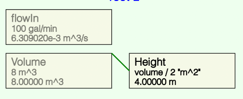
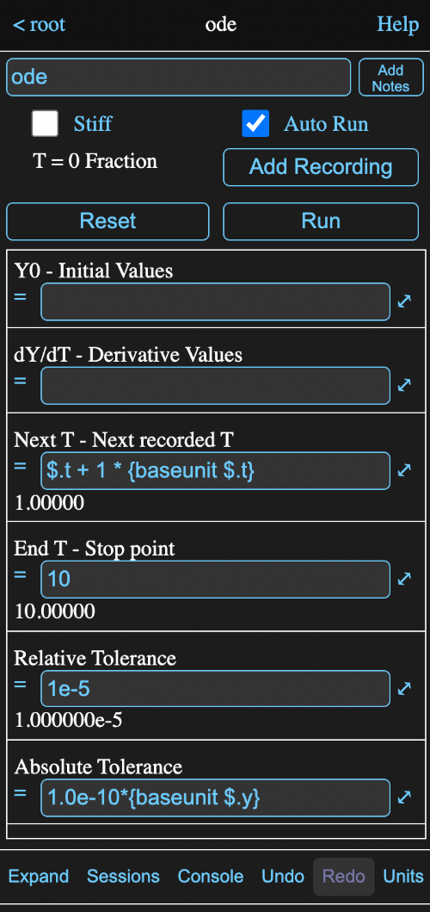
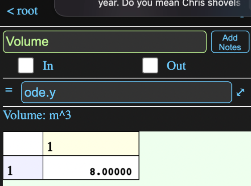
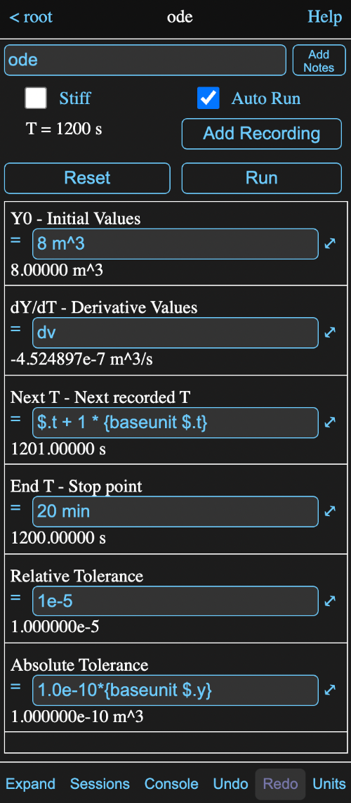
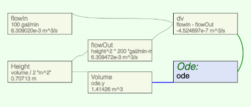
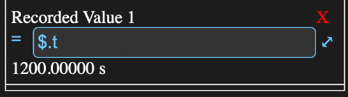
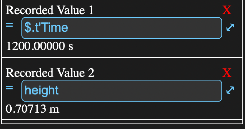
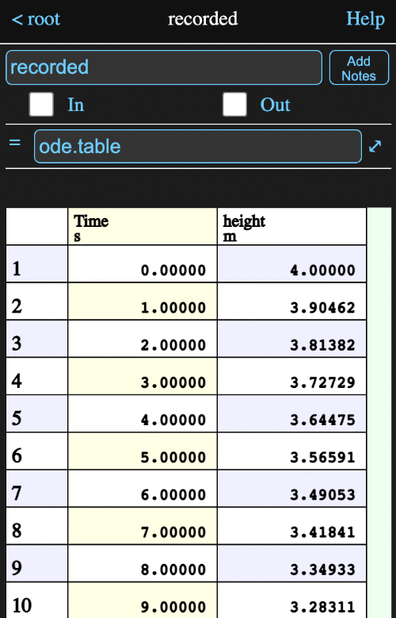
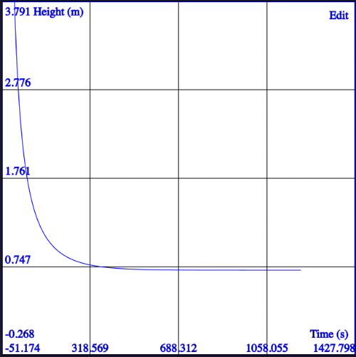

Overview
This tutorial will outline the steps to solve a simple problem; calculating the height of liquid in a tank with a fixed in flow and height variable outflow.
To keep the size manageable, I won't repeat all the stuff from other help pages, but I will try to use lots of links to relevant pages and sections.
So let's get started.
Getting Started
When you first access Math Minion on a new server or from a new browser, the Getting Started session will be loaded and if your browser window is wide enough. you will see something like this:

On the left is a diagram showing various tools, while an information view about the currently selected tool is shown on the right. In this case the Html Page tool named Welcome is selected and showing greeting information in the information view.
On a narrow device, like a phone, you probably will just see the diagram, but on the bottom button bar there will be an Info button that will switch to the information view.
This will have a corresponding Diagram button.

With the split view, which should appear even on a phone if you rotate the device to the horizontal, the button bar will look like:

Start a New Session
On the button bar discussed above. tap the Sessions button to bring up a view of the saved sessions. If you are just starting Getting Started will be the only one.

Tap the New button to start a new session. The information view should now be empty except for the name field for the root model and the diagram should be blank.
Add Expressions
Tapping any where on the diagram background will produce this background menu:

Tap on Add Tool to Model to get another menu, this time of available tools:

Tap on Expression to create an expression tool. An icon will appear on the diagram where you originally tapped:

and the top of the information view will become:
Note, if you make a mistake, you can probably just tap the Undo button on the bottom button bar to reverse it.
Tap in the name field (currently has x1) and change the name to flowIn and hit return.
Now tap in the formula field (to the right of the equals sign) and enter the formula:
100 gal/min
and the the return.
The information view should now like this:

The current conversion unit set is SI, so the value is displayed in m^3/s. All Math Minion values are matrices, so this scalar appears as a 1x1 matrix.
Tap on the diagram background again and follow the same procedure to add another expression. Name this one volume and give it a formula of:
8 m^3
Now create a third expression called height and give it the formula:
volume / 2 "m^2"
Which divides the volume by an assumed cross sectional area of the tank.
Note that the unit m^2 is in quotes. This is necessary for units that contain /, - or ^ symbols unless the entire formula is just a number and unit. This lets Math Minion differentiate between formula operators and unit definitions.
Your diagram should now look something like this, although the icons will probably be in different positions:
Note the connecting line between the corner of volume and the middle of a vertical edge of height. This designates that the value of volume is used in the calculation of height.
See the diagram help on how to rearrange, rescale, etc. the diagram. The information view for height should now be:
As height is currently selected, other icons are dimmed and the information view should look like:
Add yet another expression, this time called flowOut and give it the formula:
height^2 * 200 "gal/min-m^2"
This is just a made up formula that assumes the outlet flow will be proportional to the square of the pressure drop, represented here by the height. A suitable unit has to provided for the proportionality constant to yield a flow rate.
Having the inlet and outlet flow rates, we can calculate the rate of filling or emptying by just subtracting in, yes another expression. Call this one dv and give it the formula:
flowin - flowout
After a little rearranging, my diagram looks like:
The value for dv is -0.19558 m^3/s. To integrate this over time, we will add an ordinary differential equation ODE solver tool.
Integrating
Proceed as with the expressions, but choose ODE Solver from the tools menu and rename it ode. The information view should look like:
although you might have to scroll the table below the Reset and Run buttons to see all the fields.
Do the following:
- Tap on the Auto Run check box to turn it off for now
-
Tap on the Y0 formula field and
enter the same formula that we gave to volume:
8 m^3
- Enter dv as the formula for dY/dT.
- Enter 20 min as the formula for EndT
The information view should now look like:
The solver is set up to integrate the volume for 20 minutes given the rate of change of volume calculated by expression dv, but at this point dv is just a constant value.
Return to the diagram and tap on the volume icon to bring up its information view and change its formula to:
ode.y
where y is the ODE parameter for the dependant (i.e. integrated) variable. Since the solver auto run is turned off and its t value is 0, the value of volume just becomes the Y0 initial value we assigned to the solver - i.e. still 8 m^3.
Return to ode and tap on its Auto Run checkbox. The information view:
shows T is now 1200 s (i.e. 20 min) and the value for dv is almost zero. Looking at the diagram, once again slightly rearranged:
we see the volume is now about 1.4 m^3 and the height is about 0.7 m. While knowing the end result is nice, it can also be useful to see the path. This can be accomplished by adding recordings to the ODE solver. Return to the solver information view and tap the Add Recording button and scroll the fields table to the bottom. A row will have been added like this:
A default formula of $.t have been added to record the t values. The $ is just a shortcut for the name of the tool that owns the formula. The longer ode.t would be equivalent We want to record the time values, but change the formula to by adding 'Time to the end
$.t'Time
The single quote designates that the rest of the line is just a comment, but some tools, including this one, also use it as an alternate parameter. ODE recordings can always be referenced as r1, r2, etc., so we can reference the time recording as ode.r1. However with the commment, we can use the easier to remember ode.time.
Add another recording and this time use the formula:
height
to record the height value. We don't need a comment here because the ode solver will also use the formula itself as a parameter if it just consists of another tool name. The bottom of the information view should now look like:
Go back to the diagram and add another expression and call it recorded. Make its formula
ode.table
The top of information view for this should look like:
which shows a table value with the two recorded values as columns. You can scroll this by just dragging on a cell, but if you drag the row number column up and down, you can quickly scroll through all 1201 rows.
This is nice, but a plot would be better.
Plotting Results
Go back to the diagram and add a Graph tool and name it plot. You should get an information view like this:
Tap in the x1 field and enter the formula:
ode.time 'Time
Like the ODE solver, the graph makes use of formula comments, in this case for axis titles.
Add the formula:
ode.height 'Height
to the y1_1 field so the information view looks like:
Now tap the Plot button to see the plot.

Dragging the graph around will result in the axis labels changing accordingly. You can also zoom in and out.
Tap on the Edit button at the upper left of the plot to return to the information view.
By default the plot axis will use the minimum and maximum plot values as the upper and lower bounds. In this case it might look better to set 0 m as the lower bound for height. Tap on the Min field for Y1_1 and enter that as the formula. Tap the Plot button again.
Try choosing a different value for flowIn or the constant in flowOut and then tap on the plot icon. The results will be automatically updated to reflect the changes.
Follow Up
This tutorial only touched on the things Math Minion can do. You might want to go back to the Getting Started session and browse through its examples and descriptions.
You can also direct any questions or comments to me on the contact page.